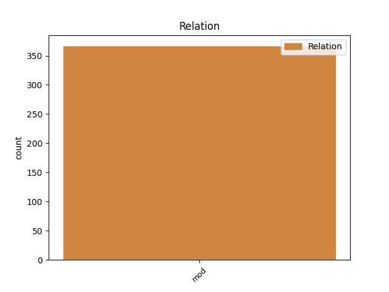
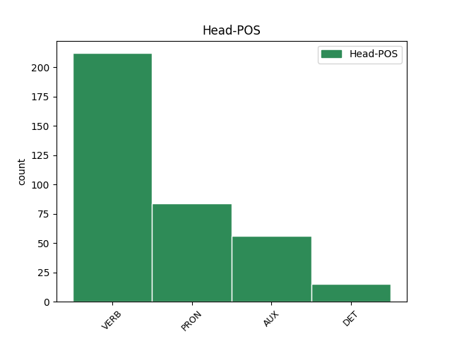
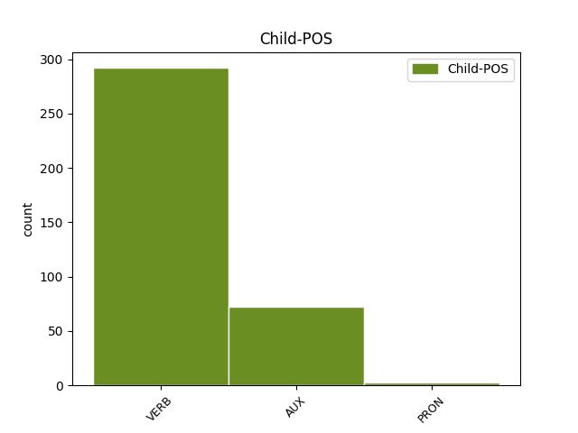

Distribution of features within this leaf



Agreement Rules sorted by frequency.
- When the dependent token is the modifer(mod) of the head token,
1 Iespējams _ _ _ _ 0 _ _ _
2 , _ _ _ _ 0 _ _ _
3 ka _ _ _ _ 0 _ _ _
4 pazemība _ _ _ _ 0 _ _ _
5 senajā _ _ _ _ 0 _ _ _
6 Izraēlā _ _ _ _ 0 _ _ _
7 tika tikt AUX vtnisi130an Evident=Fh|Mood=Ind|Person=3|Polarity=Pos|Tense=Past|VerbForm=Fin|Voice=Act 0 _ _ _
8 pārņemta _ _ _ _ 0 _ _ _
9 kā _ _ _ _ 0 _ _ _
10 ierēdņu _ _ _ _ 0 _ _ _
11 tikums _ _ _ _ 0 _ _ _
12 no _ _ _ _ 0 _ _ _
13 apkārtējām _ _ _ _ 0 _ _ _
14 kultūrām _ _ _ _ 0 _ _ _
15 , _ _ _ _ 0 _ _ _
16 kas _ _ _ _ 0 _ _ _
17 tika tikt AUX vtnisi130an Evident=Fh|Mood=Ind|Person=3|Polarity=Pos|Tense=Past|VerbForm=Fin|Voice=Act 7 mod _ LvtbNodeId=a-z99-p160s2w17
18 piemērota _ _ _ _ 0 _ _ _
19 Jahves _ _ _ _ 0 _ _ _
20 reliģijai _ _ _ _ 0 _ _ _
21 ( _ _ _ _ 0 _ _ _
22 Jahve _ _ _ _ 0 _ _ _
23 ienīst _ _ _ _ 0 _ _ _
24 visus _ _ _ _ 0 _ _ _
25 augstprātīgos _ _ _ _ 0 _ _ _
26 un _ _ _ _ 0 _ _ _
27 lepnos _ _ _ _ 0 _ _ _
28 ) _ _ _ _ 0 _ _ _
29 . _ _ _ _ 0 _ _ _
Disagree Examples:
1 Dēla _ _ _ _ 0 _ _ _
2 domas _ _ _ _ 0 _ _ _
3 netika _ _ _ _ 0 _ _ _
4 uzklausītas _ _ _ _ 0 _ _ _
5 , _ _ _ _ 0 _ _ _
6 jo _ _ _ _ 0 _ _ _
7 , _ _ _ _ 0 _ _ _
8 kā _ _ _ _ 0 _ _ _
9 jau _ _ _ _ 0 _ _ _
10 teicu _ _ _ _ 0 _ _ _
11 iepriekš _ _ _ _ 0 _ _ _
12 , _ _ _ _ 0 _ _ _
13 māju _ _ _ _ 0 _ _ _
14 mēs _ _ _ _ 0 _ _ _
15 celsim _ _ _ _ 0 _ _ _
16 sev _ _ _ _ 0 _ _ _
17 , _ _ _ _ 0 _ _ _
18 tāpēc _ _ _ _ 0 _ _ _
19 svarīgi _ _ _ _ 0 _ _ _
20 ir _ _ _ _ 0 _ _ _
21 tikai _ _ _ _ 0 _ _ _
22 tas tas PRON pd3msnn Case=Nom|Gender=Masc|Number=Sing|Person=3|PronType=Dem 0 _ _ _
23 , _ _ _ _ 0 _ _ _
24 ko _ _ _ _ 0 _ _ _
25 gribam gribēt VERB vmnipt31pan Evident=Fh|Mood=Ind|Number=Plur|Person=1|Polarity=Pos|Tense=Pres|VerbForm=Fin|Voice=Act 22 mod _ LvtbNodeId=a-c33-p25s5w25
26 mēs _ _ _ _ 0 _ _ _
27 abi _ _ _ _ 0 _ _ _
28 ar _ _ _ _ 0 _ _ _
29 sievu _ _ _ _ 0 _ _ _
30 . _ _ _ _ 0 _ _ _
1 Mēs _ _ _ _ 0 _ _ _
2 dzīvojam dzīvot VERB vmnipt21pan Evident=Fh|Mood=Ind|Number=Plur|Person=1|Polarity=Pos|Tense=Pres|VerbForm=Fin|Voice=Act 0 _ _ _
3 imitāciju _ _ _ _ 0 _ _ _
4 laikmetā _ _ _ _ 0 _ _ _
5 , _ _ _ _ 0 _ _ _
6 kad _ _ _ _ 0 _ _ _
7 plastmasa _ _ _ _ 0 _ _ _
8 izskatās izskatīties VERB vmyipt330an Evident=Fh|Mood=Ind|Person=3|Polarity=Pos|Reflex=Yes|Tense=Pres|VerbForm=Fin|Voice=Act 2 mod _ LvtbNodeId=a-c37-p145s1w8
9 kā _ _ _ _ 0 _ _ _
10 koks _ _ _ _ 0 _ _ _
11 , _ _ _ _ 0 _ _ _
12 mākslīgie _ _ _ _ 0 _ _ _
13 ziedi _ _ _ _ 0 _ _ _
14 aizvieto _ _ _ _ 0 _ _ _
15 īstos _ _ _ _ 0 _ _ _
16 un _ _ _ _ 0 _ _ _
17 pārtika _ _ _ _ 0 _ _ _
18 pilna _ _ _ _ 0 _ _ _
19 ar _ _ _ _ 0 _ _ _
20 konservantiem _ _ _ _ 0 _ _ _
21 . _ _ _ _ 0 _ _ _
1 Kad _ _ _ _ 0 _ _ _
2 pēc _ _ _ _ 0 _ _ _
3 pusotras _ _ _ _ 0 _ _ _
4 stundas _ _ _ _ 0 _ _ _
5 lidmašīna _ _ _ _ 0 _ _ _
6 paceļas pacelties VERB vmyipi130an Evident=Fh|Mood=Ind|Person=3|Polarity=Pos|Reflex=Yes|Tense=Pres|VerbForm=Fin|Voice=Act 21 mod _ LvtbNodeId=a-c43-p9s1w6|SpaceAfter=No
7 , _ _ _ _ 0 _ _ _
8 lai _ _ _ _ 0 _ _ _
9 trauktos _ _ _ _ 0 _ _ _
10 uz _ _ _ _ 0 _ _ _
11 Londonu _ _ _ _ 0 _ _ _
12 , _ _ _ _ 0 _ _ _
13 mēs _ _ _ _ 0 _ _ _
14 ar _ _ _ _ 0 _ _ _
15 Paulu _ _ _ _ 0 _ _ _
16 Bankovski _ _ _ _ 0 _ _ _
17 un _ _ _ _ 0 _ _ _
18 Knutu _ _ _ _ 0 _ _ _
19 Skujenieku _ _ _ _ 0 _ _ _
20 brālīgi _ _ _ _ 0 _ _ _
21 padalāmies padalīties VERB vmyipi32pan Evident=Fh|Mood=Ind|Number=Plur|Person=2|Polarity=Pos|Reflex=Yes|Tense=Pres|VerbForm=Fin|Voice=Act 0 _ _ _
22 ar _ _ _ _ 0 _ _ _
23 baldriāna _ _ _ _ 0 _ _ _
24 tabletītēm _ _ _ _ 0 _ _ _
25 . _ _ _ _ 0 _ _ _
1 Viņš _ _ _ _ 0 _ _ _
2 tādos _ _ _ _ 0 _ _ _
3 vakaros _ _ _ _ 0 _ _ _
4 gaidīja _ _ _ _ 0 _ _ _
5 mani _ _ _ _ 0 _ _ _
6 uz _ _ _ _ 0 _ _ _
7 mūsu _ _ _ _ 0 _ _ _
8 ielas _ _ _ _ 0 _ _ _
9 stūra _ _ _ _ 0 _ _ _
10 , _ _ _ _ 0 _ _ _
11 sēdēja _ _ _ _ 0 _ _ _
12 , _ _ _ _ 0 _ _ _
13 savas _ _ _ _ 0 _ _ _
14 mašīnas _ _ _ _ 0 _ _ _
15 siltajā _ _ _ _ 0 _ _ _
16 , _ _ _ _ 0 _ _ _
17 smacīgajā _ _ _ _ 0 _ _ _
18 tumsā _ _ _ _ 0 _ _ _
19 paslēpies _ _ _ _ 0 _ _ _
20 , _ _ _ _ 0 _ _ _
21 ugunis _ _ _ _ 0 _ _ _
22 izslēdzis _ _ _ _ 0 _ _ _
23 , _ _ _ _ 0 _ _ _
24 smēķēja _ _ _ _ 0 _ _ _
25 , _ _ _ _ 0 _ _ _
26 domāja _ _ _ _ 0 _ _ _
27 , _ _ _ _ 0 _ _ _
28 gaidīja _ _ _ _ 0 _ _ _
29 ; _ _ _ _ 0 _ _ _
30 es _ _ _ _ 0 _ _ _
31 nācu _ _ _ _ 0 _ _ _
32 steidzīgiem _ _ _ _ 0 _ _ _
33 soļiem _ _ _ _ 0 _ _ _
34 , _ _ _ _ 0 _ _ _
35 nosalušās _ _ _ _ 0 _ _ _
36 rokas _ _ _ _ 0 _ _ _
37 dziļi _ _ _ _ 0 _ _ _
38 mēteļa _ _ _ _ 0 _ _ _
39 kabatās _ _ _ _ 0 _ _ _
40 , _ _ _ _ 0 _ _ _
41 zodu _ _ _ _ 0 _ _ _
42 paslēpusi _ _ _ _ 0 _ _ _
43 pūkainajā _ _ _ _ 0 _ _ _
44 mākslīgas _ _ _ _ 0 _ _ _
45 zvērādas _ _ _ _ 0 _ _ _
46 apkaklē _ _ _ _ 0 _ _ _
47 , _ _ _ _ 0 _ _ _
48 katrā _ _ _ _ 0 _ _ _
49 solī _ _ _ _ 0 _ _ _
50 un _ _ _ _ 0 _ _ _
51 sirdspukstā _ _ _ _ 0 _ _ _
52 apzinādamās _ _ _ _ 0 _ _ _
53 , _ _ _ _ 0 _ _ _
54 ka _ _ _ _ 0 _ _ _
55 viņš _ _ _ _ 0 _ _ _
56 mani _ _ _ _ 0 _ _ _
57 redz _ _ _ _ 0 _ _ _
58 , _ _ _ _ 0 _ _ _
59 mani _ _ _ _ 0 _ _ _
60 vēro _ _ _ _ 0 _ _ _
61 , _ _ _ _ 0 _ _ _
62 smēķē _ _ _ _ 0 _ _ _
63 , _ _ _ _ 0 _ _ _
64 gaida _ _ _ _ 0 _ _ _
65 , _ _ _ _ 0 _ _ _
66 kaut _ _ _ _ 0 _ _ _
67 ko _ _ _ _ 0 _ _ _
68 domā _ _ _ _ 0 _ _ _
69 , _ _ _ _ 0 _ _ _
70 gaida _ _ _ _ 0 _ _ _
71 ; _ _ _ _ 0 _ _ _
72 es _ _ _ _ 0 _ _ _
73 esmu _ _ _ _ 0 _ _ _
74 neveikla _ _ _ _ 0 _ _ _
75 , _ _ _ _ 0 _ _ _
76 es _ _ _ _ 0 _ _ _
77 vienmēr _ _ _ _ 0 _ _ _
78 esmu _ _ _ _ 0 _ _ _
79 jutusies _ _ _ _ 0 _ _ _
80 neveikla _ _ _ _ 0 _ _ _
81 , _ _ _ _ 0 _ _ _
82 mazliet _ _ _ _ 0 _ _ _
83 par _ _ _ _ 0 _ _ _
84 garu _ _ _ _ 0 _ _ _
85 , _ _ _ _ 0 _ _ _
86 mazliet _ _ _ _ 0 _ _ _
87 par _ _ _ _ 0 _ _ _
88 platu _ _ _ _ 0 _ _ _
89 , _ _ _ _ 0 _ _ _
90 man _ _ _ _ 0 _ _ _
91 trūkst _ _ _ _ 0 _ _ _
92 līdzsvara _ _ _ _ 0 _ _ _
93 sajūtas _ _ _ _ 0 _ _ _
94 , _ _ _ _ 0 _ _ _
95 un _ _ _ _ 0 _ _ _
96 melno _ _ _ _ 0 _ _ _
97 pēdu _ _ _ _ 0 _ _ _
98 raksts _ _ _ _ 0 _ _ _
99 uz _ _ _ _ 0 _ _ _
100 baltā _ _ _ _ 0 _ _ _
101 trotuāra _ _ _ _ 0 _ _ _
102 celiņa _ _ _ _ 0 _ _ _
103 aiz _ _ _ _ 0 _ _ _
104 manis _ _ _ _ 0 _ _ _
105 stiepjas _ _ _ _ 0 _ _ _
106 drusku _ _ _ _ 0 _ _ _
107 juceklīgs _ _ _ _ 0 _ _ _
108 , _ _ _ _ 0 _ _ _
109 pie _ _ _ _ 0 _ _ _
110 mašīnas _ _ _ _ 0 _ _ _
111 durtiņām _ _ _ _ 0 _ _ _
112 tas _ _ _ _ 0 _ _ _
113 aprausies _ _ _ _ 0 _ _ _
114 pēkšņi _ _ _ _ 0 _ _ _
115 , _ _ _ _ 0 _ _ _
116 bet _ _ _ _ 0 _ _ _
117 tik _ _ _ _ 0 _ _ _
118 un _ _ _ _ 0 _ _ _
119 tā _ _ _ _ 0 _ _ _
120 pēc _ _ _ _ 0 _ _ _
121 pārdesmit _ _ _ _ 0 _ _ _
122 minūtēm _ _ _ _ 0 _ _ _
123 viss _ _ _ _ 0 _ _ _
124 jau _ _ _ _ 0 _ _ _
125 atkal _ _ _ _ 0 _ _ _
126 būs _ _ _ _ 0 _ _ _
127 balts _ _ _ _ 0 _ _ _
128 vai _ _ _ _ 0 _ _ _
129 arī _ _ _ _ 0 _ _ _
130 citas _ _ _ _ 0 _ _ _
131 pēdas _ _ _ _ 0 _ _ _
132 nojauks _ _ _ _ 0 _ _ _
133 manējo _ _ _ _ 0 _ _ _
134 rakstu _ _ _ _ 0 _ _ _
135 ; _ _ _ _ 0 _ _ _
136 viņš _ _ _ _ 0 _ _ _
137 atver atvērt VERB vmnipt130an Evident=Fh|Mood=Ind|Person=3|Polarity=Pos|Tense=Pres|VerbForm=Fin|Voice=Act 0 _ _ _
138 durtiņas _ _ _ _ 0 _ _ _
139 , _ _ _ _ 0 _ _ _
140 kad _ _ _ _ 0 _ _ _
141 esmu būt VERB vmnipii1san Evident=Fh|Mood=Ind|Number=Sing|Person=1|Polarity=Pos|Tense=Pres|VerbForm=Fin|Voice=Act 137 mod _ LvtbNodeId=a-d198-p40s1w141
142 dažus _ _ _ _ 0 _ _ _
143 soļus _ _ _ _ 0 _ _ _
144 no _ _ _ _ 0 _ _ _
145 mašīnas _ _ _ _ 0 _ _ _
146 , _ _ _ _ 0 _ _ _
147 pārliecas _ _ _ _ 0 _ _ _
148 pāri _ _ _ _ 0 _ _ _
149 pasažieru _ _ _ _ 0 _ _ _
150 sēdeklim _ _ _ _ 0 _ _ _
151 , _ _ _ _ 0 _ _ _
152 - _ _ _ _ 0 _ _ _
153 klikt _ _ _ _ 0 _ _ _
154 - _ _ _ _ 0 _ _ _
155 tās _ _ _ _ 0 _ _ _
156 ir _ _ _ _ 0 _ _ _
157 vaļā _ _ _ _ 0 _ _ _
158 tieši _ _ _ _ 0 _ _ _
159 tai _ _ _ _ 0 _ _ _
160 mirklī _ _ _ _ 0 _ _ _
161 , _ _ _ _ 0 _ _ _
162 kad _ _ _ _ 0 _ _ _
163 es _ _ _ _ 0 _ _ _
164 esmu _ _ _ _ 0 _ _ _
165 klāt _ _ _ _ 0 _ _ _
166 , _ _ _ _ 0 _ _ _
167 es _ _ _ _ 0 _ _ _
168 iesēžos _ _ _ _ 0 _ _ _
169 žigli _ _ _ _ 0 _ _ _
170 , _ _ _ _ 0 _ _ _
171 viņš _ _ _ _ 0 _ _ _
172 pārlaiž _ _ _ _ 0 _ _ _
173 steidzīgu _ _ _ _ 0 _ _ _
174 skatu _ _ _ _ 0 _ _ _
175 ielai _ _ _ _ 0 _ _ _
176 - _ _ _ _ 0 _ _ _
177 neviens _ _ _ _ 0 _ _ _
178 nav _ _ _ _ 0 _ _ _
179 redzējis _ _ _ _ 0 _ _ _
180 - _ _ _ _ 0 _ _ _
181 un _ _ _ _ 0 _ _ _
182 tai _ _ _ _ 0 _ _ _
183 pašā _ _ _ _ 0 _ _ _
184 acumirklī _ _ _ _ 0 _ _ _
185 saņem _ _ _ _ 0 _ _ _
186 manus _ _ _ _ 0 _ _ _
187 aukstos _ _ _ _ 0 _ _ _
188 pirkstus _ _ _ _ 0 _ _ _
189 savā _ _ _ _ 0 _ _ _
190 lielajā _ _ _ _ 0 _ _ _
191 plaukstā _ _ _ _ 0 _ _ _
192 , _ _ _ _ 0 _ _ _
193 viegls _ _ _ _ 0 _ _ _
194 skūpsts _ _ _ _ 0 _ _ _
195 uz _ _ _ _ 0 _ _ _
196 lūpām _ _ _ _ 0 _ _ _
197 , _ _ _ _ 0 _ _ _
198 - _ _ _ _ 0 _ _ _
199 nu _ _ _ _ 0 _ _ _
200 sveika _ _ _ _ 0 _ _ _
201 , _ _ _ _ 0 _ _ _
202 saule _ _ _ _ 0 _ _ _
203 . _ _ _ _ 0 _ _ _
1 Kad _ _ _ _ 0 _ _ _
2 esu būt AUX vcnipii1san Evident=Fh|Mood=Ind|Number=Sing|Person=1|Polarity=Pos|Tense=Pres|VerbForm=Fin|Voice=Act 7 mod _ LvtbNodeId=a-d198-p52s2w2
3 kopaa _ _ _ _ 0 _ _ _
4 ar _ _ _ _ 0 _ _ _
5 Tewi _ _ _ _ 0 _ _ _
6 , _ _ _ _ 0 _ _ _
7 apstaajas apstāties VERB vmyipi130an Evident=Fh|Mood=Ind|Person=3|Polarity=Pos|Reflex=Yes|Tense=Pres|VerbForm=Fin|Voice=Act 0 _ _ _
8 laiks _ _ _ _ 0 _ _ _
9 , _ _ _ _ 0 _ _ _
10 aizmirstas _ _ _ _ 0 _ _ _
11 probleemas _ _ _ _ 0 _ _ _
12 , _ _ _ _ 0 _ _ _
13 ikdienas _ _ _ _ 0 _ _ _
14 ruupes _ _ _ _ 0 _ _ _
15 pamet _ _ _ _ 0 _ _ _
16 , _ _ _ _ 0 _ _ _
17 kaa _ _ _ _ 0 _ _ _
18 taac _ _ _ _ 0 _ _ _
19 astraalais _ _ _ _ 0 _ _ _
20 kjermenis _ _ _ _ 0 _ _ _
21 , _ _ _ _ 0 _ _ _
22 bailes _ _ _ _ 0 _ _ _
23 pat _ _ _ _ 0 _ _ _
24 iedomaaties _ _ _ _ 0 _ _ _
25 , _ _ _ _ 0 _ _ _
26 ka _ _ _ _ 0 _ _ _
27 tas _ _ _ _ 0 _ _ _
28 kaut _ _ _ _ 0 _ _ _
29 kad _ _ _ _ 0 _ _ _
30 vareetu _ _ _ _ 0 _ _ _
31 beigties _ _ _ _ 0 _ _ _
32 . _ _ _ _ 0 _ _ _